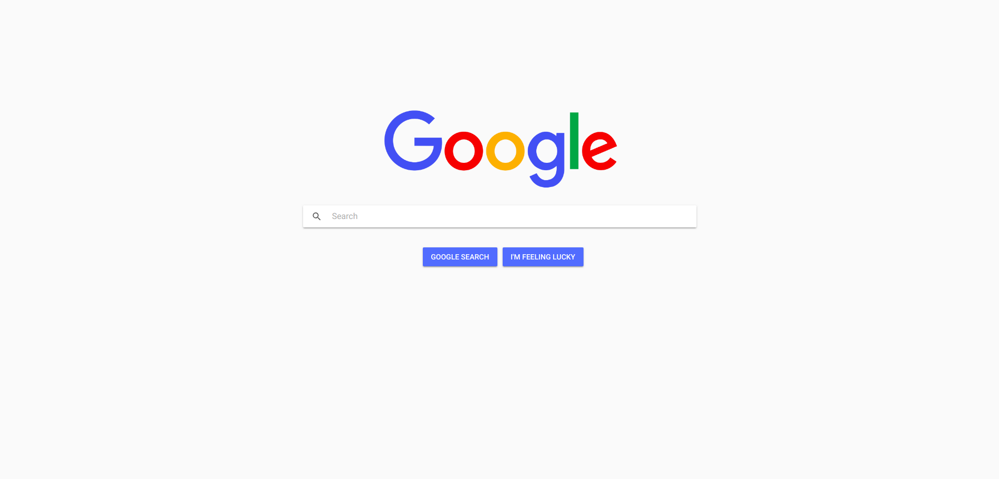
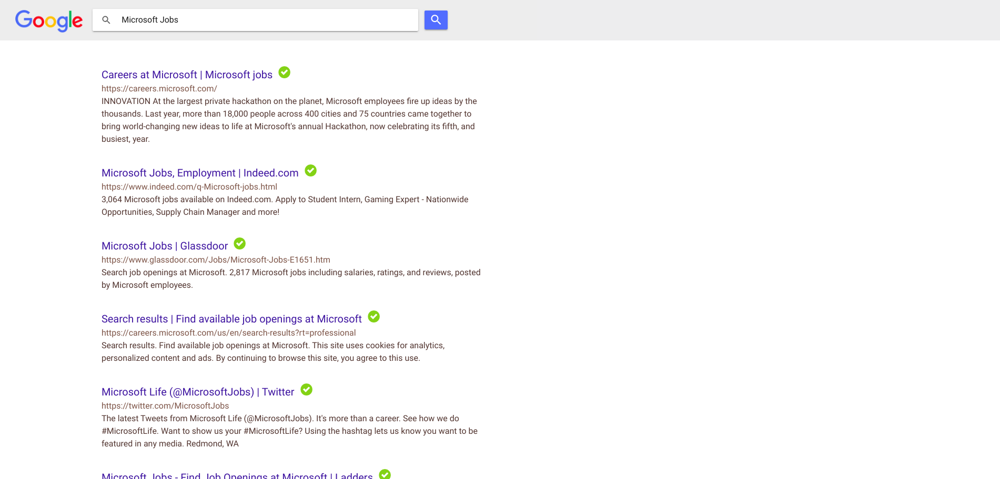

Introduction
This project is a replica of Google Search Engine. I developed this application for educational purpose only. This application uses a scraper script in the background to extract results from search engine. We can also see a green tick to the side of every secure link in the search results.
Technology Stack
Ionic-Angular, NodeJS, Express
Screenshots

Homepage

Search Results
Thank You
Thank you for reading this post. This Project was only for educational purpose only. I am working on this project to improve the search engine and add new features to it.